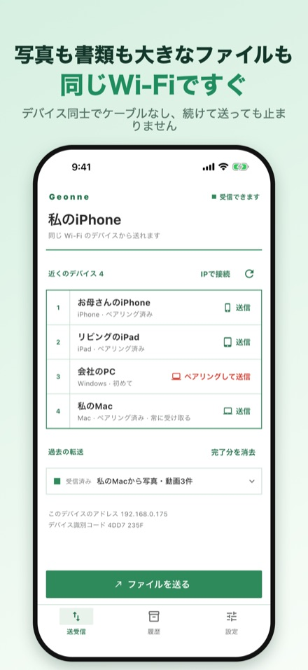
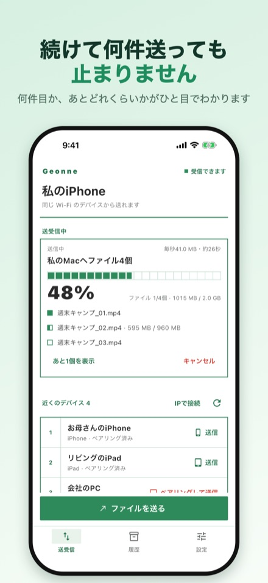
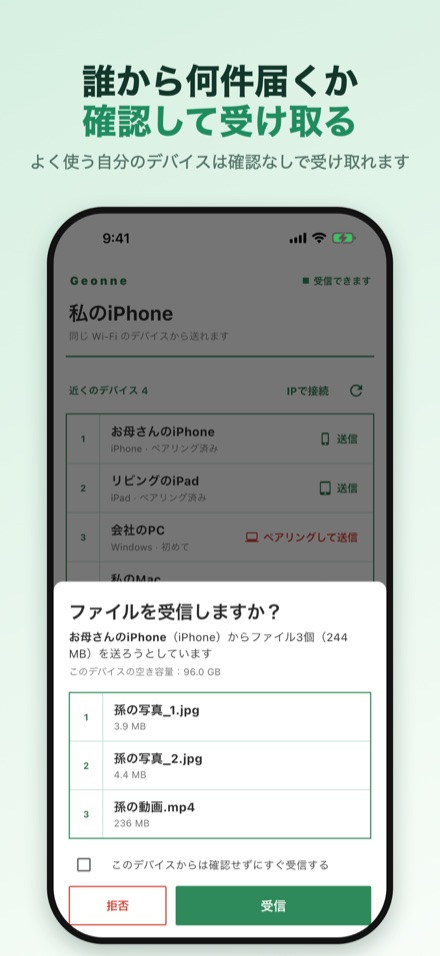
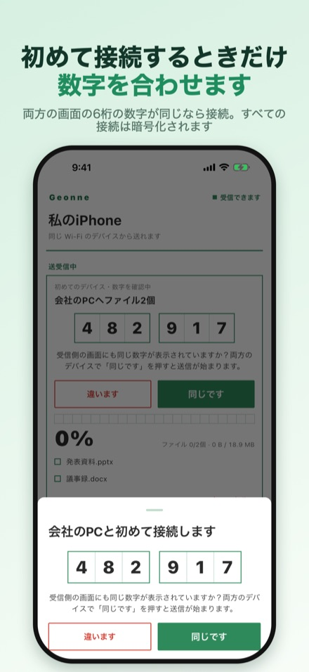
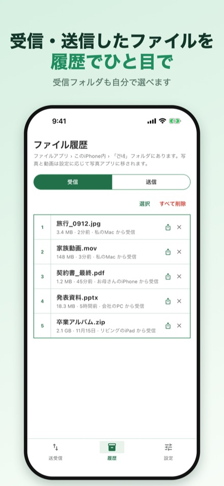
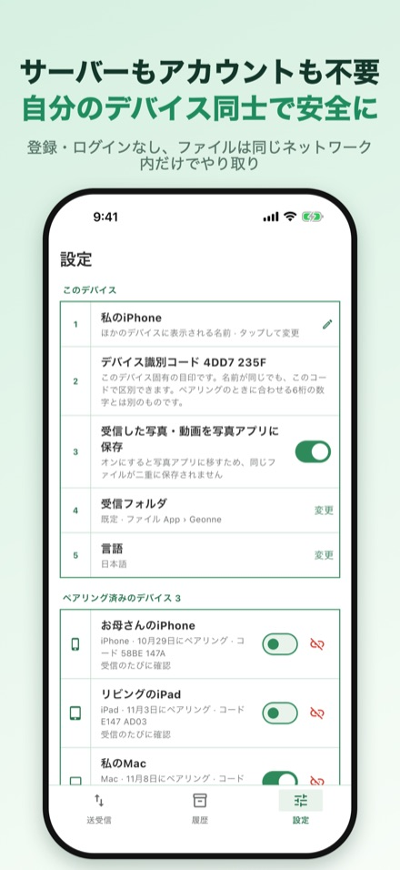

写真も書類も大きなファイルも同じWi-Fiですぐ。
同じWi-Fiにある自分のデバイス同士で、ケーブルなしですぐにやり取りできます。続けて何件送っても止まらず、途切れても残りのファイルだけを送ります。サーバーもアカウントも不要で、デバイス同士が直接やり取りし、すべての接続は暗号化されます。
iPhone・iPad・Android版はApp StoreとGoogle Playで入手できます。

こんなときに
写真・動画
旅行で撮った写真や動画を、スマホからMac・PCへすぐに。ケーブルもクラウドも使いません。
書類・ファイル
契約書、課題、圧縮ファイルを、自分のデバイス同士でやり取りします。
大きなファイル
数GBの動画もそのまま。続けて送っても止まらず、途切れても残りだけを送ります。
こんな画面です
iPhoneの画面例です。デバイス名やファイルは例です。






安心して使える理由
サーバーもアカウントも不要
ファイルはインターネット上のサーバーを通らず、同じネットワーク内でデバイス同士が直接やり取りします。会員登録・ログインは不要です。
暗号化と6桁の確認
すべての接続は暗号化され、初めてのデバイスは両方の画面の6桁の数字を合わせてから接続します。
どこでも同じアプリ
iPhone・iPad・Android・Mac・Windowsで同じように使え、한국어・English・日本語・繁體中文に対応しています。
自分のデバイスはすぐ受信
よく使う自分のデバイスは「常に受信」で確認なしに受け取れ、受信・送信の履歴も見られます。
ダウンロード
iPhone・iPad
Androidスマホ・タブレット
macOS 12以降 · 約12MB · Appleの公証済み
インストール方法
Windows 10・11（64ビット） · 約12MB
インストール方法
最新版：1.0.0 · 2026年11月16日 · Mac・Windows版には広告はありません
Macにインストールする
-
ダウンロードしたファイルを開きます
上のボタンでダウンロードした Geonne-1.0.0.dmg をダブルクリックすると、小さなウィンドウが開きます。
-
GeonneをApplicationsフォルダにドラッグします
ウィンドウの中の Geonne アイコンを、隣にある Applications（アプリケーション） フォルダにドラッグすればインストール完了です。ウィンドウを閉じて、dmgはゴミ箱に移してかまいません。
-
アプリケーションからGeonneを開きます
初回に「インターネットからダウンロードされたアプリケーションです」と表示されたら［開く］を押してください。Appleの検査を受けたアプリなので、ほかの警告は出ません。
-
「ローカルネットワーク」の許可画面で［許可］
同じWi-Fiのほかのデバイスを探すために必要です。誤って許可しなかった場合は、システム設定 → プライバシーとセキュリティ → ローカルネットワーク でGeonneをオンにしてください。
Windowsにインストールする
-
インストーラーをダウンロードして開きます
上の［Windows版をダウンロード］を押すと、Geonne-Setup-1.0.0 がダウンロードフォルダに保存されます。ダブルクリックして開きます。
-
「Windows によって PC が保護されました」と表示されたら［詳細情報］→［実行］
まだMicrosoftの証明書を付けていない小さな会社のプログラムのため、初回はこの表示が出ることがあります。ウィンドウ内の［詳細情報］を押すとアプリ名 Geonne-Setup-1.0.0.exe と発行元が表示され、下に［実行］ボタンが現れます。そのボタンを押してください。
ウィンドウの色はPCの色設定により、青や紫など異なって見えることがあります。 -
セットアップで［次へ］→［インストール］→［完了］
管理者パスワードなしで、今ログインしている人用にインストールされるのが標準です。デスクトップのショートカットが必要ならチェックしてください。最後の画面で［Geonneを実行］にチェックしたまま［完了］を押すとすぐ起動します。次回からはスタートメニューの Geonne から開きます。
-
ファイアウォールの画面が出たら［アクセスを許可する］
「Windows Defender ファイアウォールによって、このアプリの機能の一部がブロックされています」と出たら、プライベート ネットワークにチェックが入っているか確認して［アクセスを許可する］を押してください。ブロックすると、デバイスがお互いに見えません。
初めて接続して送る
-
2台でGeonneを開きます
同じWi-Fiにつないだ2台でGeonneを開くと、数秒でお互いの近くのデバイスの一覧に表示されます。
-
送り先の［送信］を押してファイルを選びます
初めて見るデバイスは［ペアリングして送信］です。MacとWindowsではファイルをウィンドウにドラッグしてもかまいません。複数をまとめて選べて、大きなファイルもそのまま送れます。
-
初回だけ6桁の数字を確認します
初めて会うデバイス同士では、両方の画面に同じ6桁の数字が表示されます。同じなら両方のデバイスで［同じです］を押します（受け取る側のボタンは［同じです、受け取る］）。転送が始まり、次回からは数字を聞かれません。
-
受け取る側で［受信］
接続済みのデバイスからファイルが届いたら、誰から何件かを確認して［受信］を押します。よく使う自分のデバイスは「常に受け取る」にすると、確認なしで受け取れます。
よくある質問
相手のデバイスが一覧に出ません
2台が同じWi-Fiか、両方でGeonneが開いているか確認してください。ルーターの「APアイソレーション」や、会社・カフェのゲスト用Wi-Fiは、デバイス同士が見えないようにしていることがあります。その場合はGeonne画面の［IPで接続］に相手のデバイスのアドレスを直接入力すると接続できます。Macはローカルネットワークの許可、Windowsはファイアウォールの許可も確認してください。
ファイルはインターネットのサーバーを経由しますか？
いいえ。ファイルは同じネットワーク内でデバイス同士が直接やり取りし、すべての接続は暗号化されます。会員登録やログインもありません。
フォルダごと送れますか？
まだ対応していません。フォルダはZIPにまとめて送ってください。
新しいバージョンはどう入手しますか？
このページから新しいインストーラーをダウンロードしてそのままインストールすると、古い版に上書きされます。
削除するには？
Macは「アプリケーション」フォルダのGeonneをゴミ箱に移します。Windowsは 設定 → アプリ → インストールされているアプリ で Geonne を探して［アンインストール］を押します。
プライバシーはどうなりますか？
Mac・Windows版には広告もアカウントもなく、ファイルと履歴はデバイスの中にだけ残ります。詳しくはプライバシーポリシーをご覧ください。
お問い合わせ
ご利用のご質問、不具合のご報告、個人情報に関するお問い合わせを受け付けています。